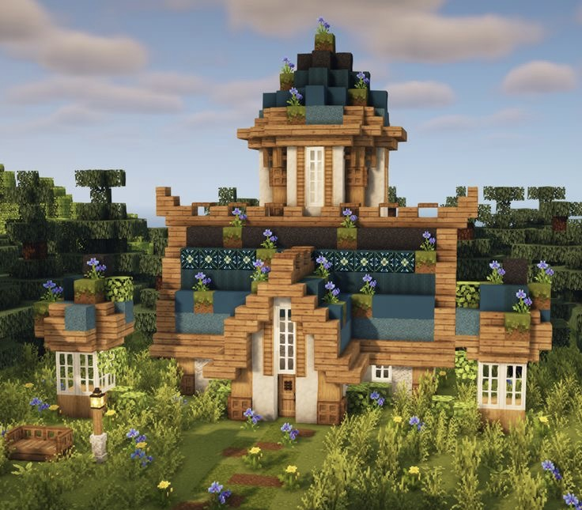
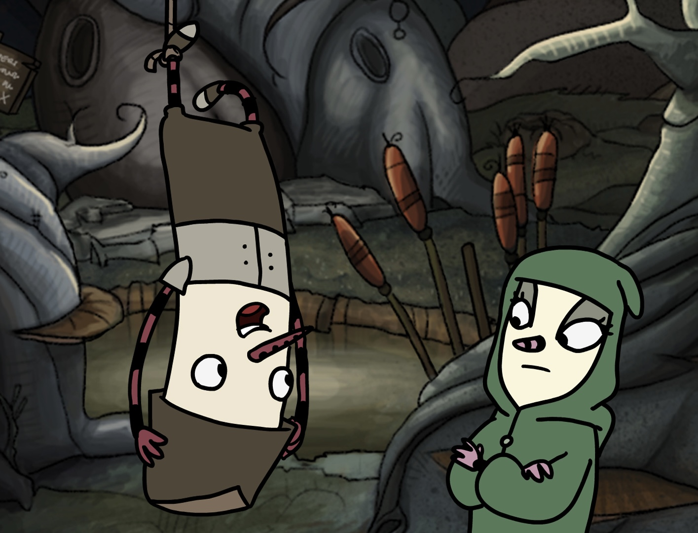

Gépesjátékozás
Mivel apukám sokat gépesjátékozik, már hamar megismertem az efféle játékok világát. Szeretek együtt játszani a barátaimmal, az unokatesóimmal vagy az apukámmal. Sok játékot szeretek, de most bemutatom a három kedvencemet.
Minecraft
 Ezt a játékot már nagyon kicsi koromban ismertem. Eleinte még csak azt néztem, ahogy az apukám játszik, de később már elkezdtem én is játszani. A Minecraft tényleg az egyik kedvenc játékom, mivel annyi mindent lehet benne csinálni. Sohase unom meg. A karantén idején megismertem más velem nagyjából egyidős embereket, akik szintén minecarftoznak, és szívesen játszottak volna együtt egy szerveren. Ezekkel a barátaimmal még midnig nagyon jóban vagyok annak ellenére, hogy más országokban élünk.A Minecraftban legszívesebben azt csinálom, hogy creative-ban építek magamnak szép házikót meg kertet. Aztán survivalban éldegélek, és megmentem a kóbor állatokat.
The Inner World
 Ezt a játékot is apukám játszotta, még amikor nagyon kicsi voltam. Nem is emlékeztem rá rendesen, csak ilyen emlékképekben néha felvillant a fejemben a főszereplő és a történet. Azonban talán egy-két éve végre sikerült rátalálnom a játékra. Előszőr kijátszottam az apukámmal a második részt, mert ezzel még ő sem játszott. Aztán a legjobb barátomnak is megmutattam ezt a játékot, mind a ketten beleszerettünk. Ismét kijátszottuk közösen a második részt. Majd az elsőt is. Mivel mindig változott, hogy kinél vagyunk, két szálon játszottuk a játékot. Egyszer nála, aztán nálam. Szóval összeségében körülbelül ötször játszottam ki az Inner Worldöt.Maga a játék egy világról szól, ahol vannak a csíkos orrú és a furulya orrú emberkék. A furulya orrúakat elnyomták, ezért csíkos zoknit kellett húzniuk az orrukra, hogy ne zárják őket börtönbe. A főszereplő egy furulya orrú ember és a galambja. A történet lényege az, hogy bebizonyítsa az ember, hogy a furulya orrúak nem rosszak, és nem kell elnyomni őket. Csak a kormányzó az, aki hazudozik mindenféle rossz dolgot róluk. A történet során sok emberrel és lénnyel lehet találkozni.